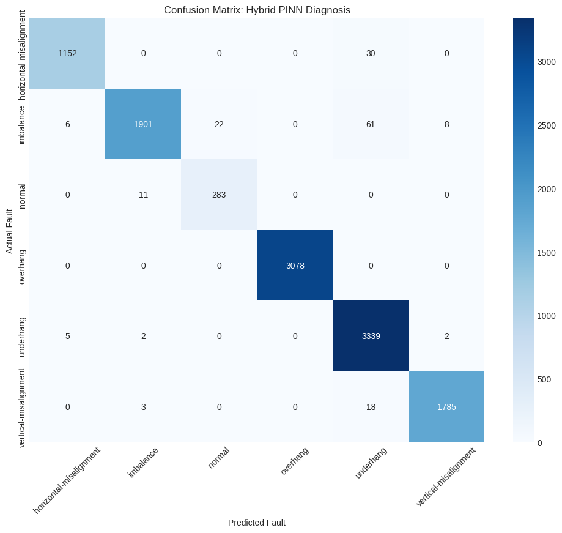
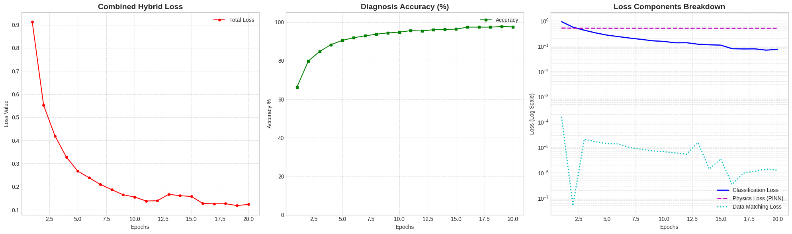

AI-Powered Predictive Maintenance for Industrial Motors
A rotating-machinery fault-classification project combining vibration-signal analysis, engineered spectral features, deep learning, and physics-informed constraints.

The Problem
Industrial vibration data contains rich fault signatures, but those signatures can be difficult to separate without careful signal processing and modeling. The challenge was to build a fault-classification pipeline that combines vibration-signal analysis, physically meaningful features, and data-driven learning to distinguish multiple rotating-machinery fault conditions.
The Approach
- Vibration-signal preprocessing and normalization.
- FFT-based feature extraction and rotational harmonics.
- Statistical features including RMS, kurtosis, skewness, and crest factor.
- CNN-based representation learning integrated with physics-informed constraints in a hybrid diagnosis model.
- Evaluation across normal operation, imbalance, misalignment, and bearing-fault conditions.
Technical Decisions
- Spectral and statistical features were used to preserve physically meaningful information from vibration signals.
- The modeling pipeline combines data-driven learning with engineering knowledge instead of treating raw vibration measurements as arbitrary input.
- Physics-informed constraints were incorporated into the hybrid diagnosis framework alongside classification and data-matching objectives.
- The MAFAULDA dataset provides a controlled benchmark for rotating-machinery fault classification.
Results
The final classification pipeline achieved 98% overall accuracy on the MAFAULDA rotating-machinery fault dataset, demonstrating strong separation across the evaluated operating and fault conditions.
Why It Matters
The project demonstrates how signal processing, domain-informed feature engineering, deep learning, and physics-informed modeling can be combined to identify mechanical fault conditions from vibration data. This type of pipeline can form the diagnostic layer of broader condition-monitoring and predictive-maintenance systems.
Experimental Evidence
Experimental results showing fault-classification performance and the training behavior of the hybrid physics-informed diagnosis model.

Fault Classification Performance
Confusion matrix of the Hybrid PINN diagnosis model across six rotating-machinery operating and fault conditions.

Hybrid Model Training Behavior
Training diagnostics showing the evolution of the combined hybrid loss, diagnosis accuracy, and individual classification, physics, and data-matching loss components.
Need a Similar Solution?
If your project involves predictive maintenance, signal processing, fault classification, or physics-informed machine learning, let’s discuss the problem and the right technical approach.